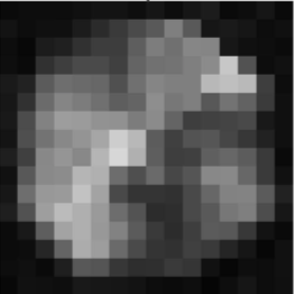

|
Research
My research interests include Robotic Neurorehabilitation, Bioinstrumentation and Embedded systems engineering. I am currently working on the development of an assistive robot for upper extremity rehabilitation in stroke patients in Nigeria.
|
|

|
A Simulator for Testing Planar Upper Extremity Rehabilitation Robot Control Algorithms
Ayodele K.P., Akinniyi, O. T., Oluwatope, A. O., Jubril, A., Ogundele, A., Komolafe M.A.
Nigerian Journal of Technology 2021, 40(1), 115-128
we took advantage of the emergence of accurate biomechanical human hand models to develop
a system in which the interaction between a human arm and a rehabilitation robot while performing a planar
trajectory tracking task can be simulated.
|
|
|
A Mobile Percussograph for Medical Examination of the Torso
Ayodele K.P., Olugbon F. J., Ogunlade O., Akinwale O. B., Akinniyi, O. T. and Kehinde L. O.
FUOYE Journal of Engineering and Technology 5.2 (2020).
Medical percussion is a free, low-risk procedure used by physicians during physical examination of patients.
This paper reports the development of a mobile percussograph.
Spectrographs generated from the wavelet coefficients were used for training a MobileNet network for a 3-way classification.
Subject-specific test accuracies of 92.9 %, 93.7 %, and 96.4 % were obtained for three subjects, while the cross-subject classification accuracy was 95.0 %.
As this is the first reported general purpose mobile percussograph reported in the literature, these results are state-of-the-art.
|
|
{kind=link}